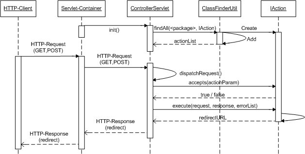

HttpServlet
de.htwg_konstanz.ebus.wholesaler.demo.ControllerServlet
HttpServlet
de.htwg_konstanz.ebus.wholesaler.demo.ControllerServlet
|
||||||||||
| PREV CLASS NEXT CLASS | FRAMES NO FRAMES | |||||||||
| SUMMARY: NESTED | FIELD | CONSTR | METHOD | DETAIL: FIELD | CONSTR | METHOD | |||||||||
java.lang.Object
public class ControllerServlet
The architecture of this demo is based on the MVC2 - design pattern (Model View Controller 2nd edition).
The MVC2 - Pattern is used to separate the application logic (Controller), the user interface (View) and the corresponding data (Model). The ControllerServlet acts as the controller, the JSP pages implements the view and the BO's (Business Objects) of the framework represents the model.
The main job of ControllerServlet is, to dispatch the requests and to call the corresponding action. And at least, to display the result of the called action in the corresponding JSP page.
|  |
The servlet acts as a central entry point of the application. That means, all actions have to reference the controller servlet via URL.
Example-URL: http://<hostname>:<port>/controllerservlet?action=showProductList
| Constructor Summary | |
|---|---|
ControllerServlet()
|
|
| Method Summary | |
|---|---|
protected void |
dispatchRequest(HttpServletRequest request,
HttpServletResponse response)
Process the HTTP Get and Post-/Request. |
void |
doGet(HttpServletRequest request,
HttpServletResponse response)
Process a HTTP Get request. |
void |
doPost(HttpServletRequest request,
HttpServletResponse response)
Process a HTTP Post request. |
void |
init()
Initialization of variables. |
| Methods inherited from class java.lang.Object |
|---|
clone, equals, finalize, getClass, hashCode, notify, notifyAll, toString, wait, wait, wait |
| Constructor Detail |
|---|
public ControllerServlet()
| Method Detail |
|---|
public void init()
throws ServletException
ServletException
public void doGet(HttpServletRequest request,
HttpServletResponse response)
throws ServletException,
java.io.IOException
request - the calling HTTP Requestresponse - the corresponding HTTP Response
ServletException
java.io.IOException
public void doPost(HttpServletRequest request,
HttpServletResponse response)
throws ServletException,
java.io.IOException
request - the calling HTTP Requestresponse - the corresponding HTTP Response
ServletException
java.io.IOException
protected void dispatchRequest(HttpServletRequest request,
HttpServletResponse response)
throws ServletException,
java.io.IOException
request - the calling HTTP Requestresponse - the corresponding HTTP Response
ServletException
java.io.IOException
|
||||||||||
| PREV CLASS NEXT CLASS | FRAMES NO FRAMES | |||||||||
| SUMMARY: NESTED | FIELD | CONSTR | METHOD | DETAIL: FIELD | CONSTR | METHOD | |||||||||